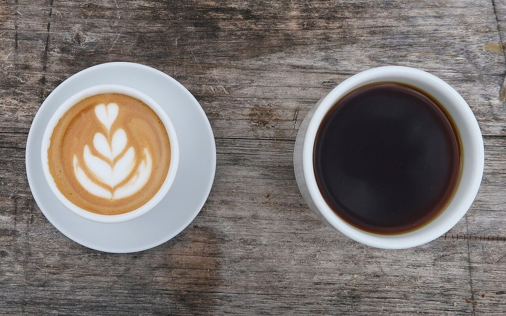
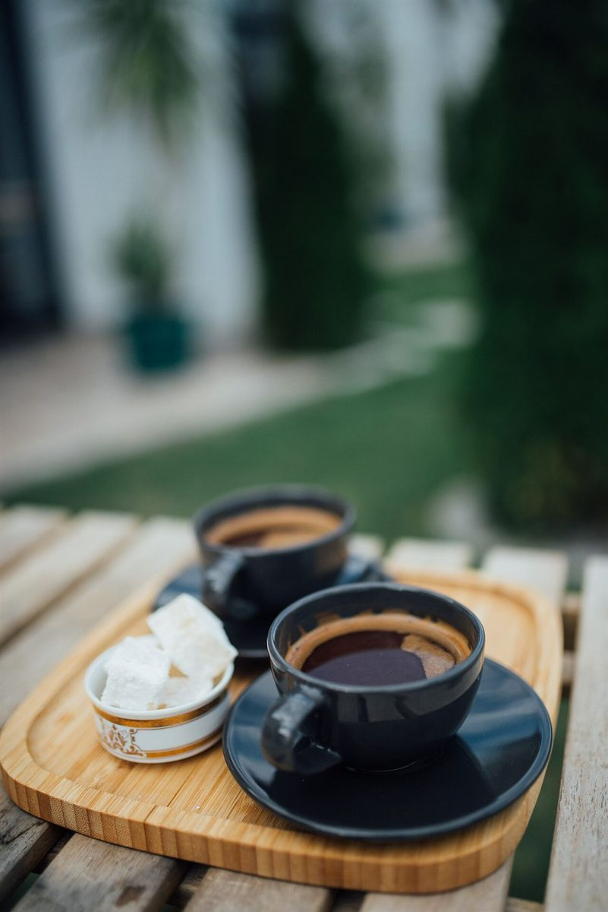

1枚
a plate
plates
皿が一枚だけなら、そのまま。

制作側の連想
店名の由来は分かりません。制作側は「ミシュンズ」の終わりの「ズ」の響きから、英語で名詞が複数になるときにつく「s」を連想しました。そこでこのページは、ものの数を「ひとつ」「ふたつ」「たくさん」と数え、そのたびに名詞の終わりへsをつけていく作りにしています。お店の理念・由来とは無関係な、制作側の連想です。
数えてみる(写真はすべてイメージ)
写真は諏訪市やお店のものではありません。数のイメージで選んだ、国外・撮影地不明のフリー素材です。
a plate
皿が一枚だけなら、そのまま。
a cup が ふたつで
カップがふたつ並ぶと、sがひとつつく。

another cup も
トレーにのっても、数はふたつ。

an apple が たくさんで
数えきれないほど積むと、これもs。

a tulip が 畝いっぱいで
遠くまで続いても、語尾は変わらずs。

a marble が いくつも
転がって集まると、にぎやかなs。

ご案内
| 所在地 | 〒392-0015 長野県諏訪市中洲神宮寺２３１−５ |
|---|---|
| 電話 | 0266-53-3533 |
| 営業時間 | 準備中 |
| 定休日 | 準備中 |
| ご予約 | 準備中 |
| 駐車場 | 準備中 |
| SNS | Instagram @cafe.mishuns |